Options avancées dans ggplot2
Livres de référence sur la visualisation des données
Healy, K. Data Visualization: A practical introduction https://socviz.co/ (aussi disponible en format papier à la bibliothèque de l’UQAT)
Wilke, C.O. Fundamentals of Data Visualization (https://serialmentor.com/dataviz/
Références utiles pour ggplot2
Liste des fonctions: https://ggplot2.tidyverse.org/reference/
Codes des couleurs, types de lignes et points, etc.: https://ggplot2.tidyverse.org/articles/ggplot2-specs.html
Liste des packages d’extension disponibles: https://www.ggplot2-exts.org/
Exemples de packages d’extension
- gganimate: Produire des figures animées.
- ggrepel: Faciliter le placement d’étiquettes de texte sur les graphiques.
- ggstatsplot: Visualiser le résultat de tests statistiques.
- ggthemes: Davantage d’options de thèmes pour les figures.
- cowplot et patchwork: Créer des figures composées.
- lindia: Plus de graphiques de diagnostic pour les modèles linéaires.
Exemple 1
Jeu de données aiv_ducks.csv utilisé pour le laboratoire sur les modèles linéaires mixtes généralisés: présence ou absence de la grippe aviaire (AIV) chez des canards dans l’est du Canada en fonction de différents prédicteurs.
aiv <- read.csv("../donnees/aiv_ducks.csv")
str(aiv)## 'data.frame': 8967 obs. of 10 variables:
## $ Species : Factor w/ 7 levels "ABDU","AGWT",..: 5 5 5 5 5 5 4 5 5 5 ...
## $ Age : Factor w/ 2 levels "AHY","HY": 2 2 2 1 1 1 1 2 1 2 ...
## $ Sex : Factor w/ 2 levels "F","M": 2 1 1 2 2 2 1 2 2 2 ...
## $ AIV : int 1 0 1 1 1 0 1 1 1 0 ...
## $ Site : Factor w/ 72 levels "Allisary","Amherst Point",..: 2 70 70 67 67 67 1 70 67 1 ...
## $ Latitude : num 45.8 46 46 46 46 ...
## $ Longitude : num -64.2 -64.3 -64.3 -64.3 -64.3 ...
## $ Year : int 2005 2005 2005 2005 2005 2005 2005 2005 2005 2005 ...
## $ Temperature : num 18.6 17.6 17.6 17.6 17.6 ...
## $ Population_Density: num 1.2 1.16 1.16 1.16 1.16 ...library(ggplot2)
ggplot(aiv, aes(x = Age, fill = as.factor(AIV))) +
geom_bar()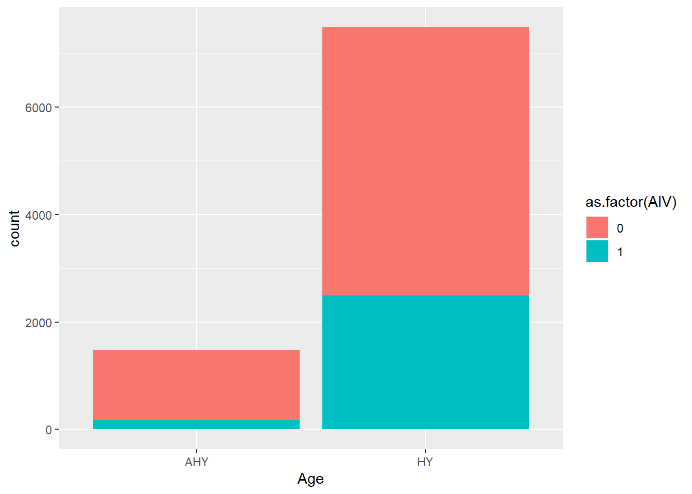
Par défaut, les barres de différentes couleurs sont superposées (position = "stack") pour les diagrammes à barres, ce qui rend plus difficile la comparaison sur l’axe des y. On peut spécifier position = "dodge" dans geom_bar pour qu’elles soient côte-à-côte:
ggplot(aiv, aes(x = Age, fill = as.factor(AIV))) +
geom_bar(position = "dodge")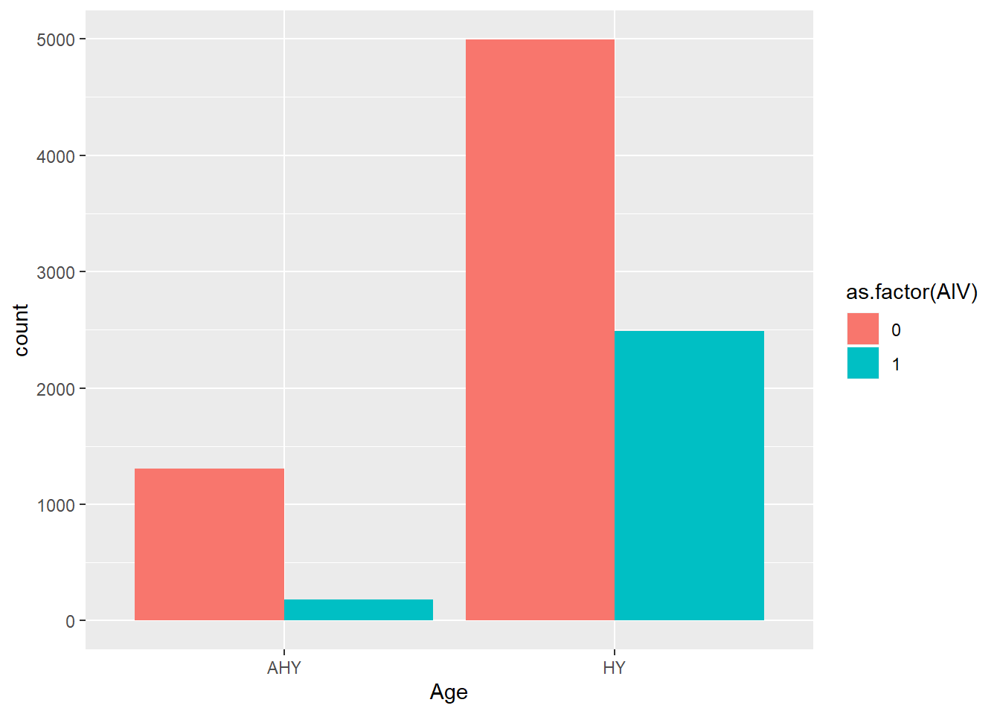
Personnaliser le graphique:
Modifier les titres du graphique, les titres des axes et de la légende avec
labs.Modifier les échelles avec les fonctions
scale_...; l’argumentlabelspermet de changer les libellés.
ggplot(aiv, aes(x = Age, fill = as.factor(AIV))) +
labs(title = "AIV en fonction de l'âge", x = "Âge", y = "Nombre de cas", fill = "AIV") +
geom_bar(position = "dodge") +
scale_x_discrete(labels = c("> 1 an", "< 1 an")) +
scale_fill_discrete(labels = c("Absent", "Présent"))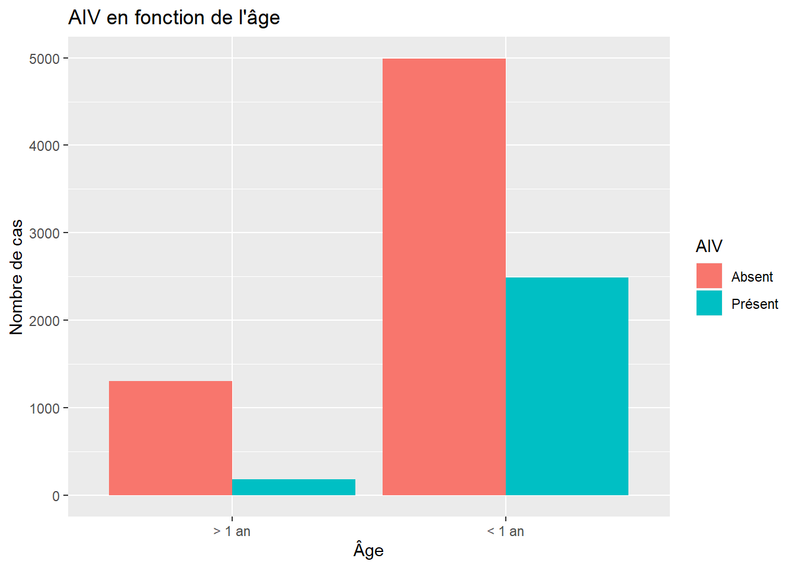
On peut aussi changer la palette de couleur dans scale_fill_.... La fonction scale_fill_brewer donne accès aux palettes de ColorBrewer; voir le site http://colorbrewer2.org pour une liste.
Ici, le graphique est “enregistré” dans une variable p1, puis on peut l’afficher en imprimant le résultat de p1.
p1 <- ggplot(aiv, aes(x = Age, fill = as.factor(AIV))) +
labs(title = "AIV en fonction de l'âge", x = "Âge", y = "Nombre de cas", fill = "AIV") +
geom_bar(position = "dodge") +
scale_x_discrete(labels = c("> 1 an", "< 1 an")) +
scale_fill_brewer(palette = "Dark2", labels = c("Absent", "Présent"))
p1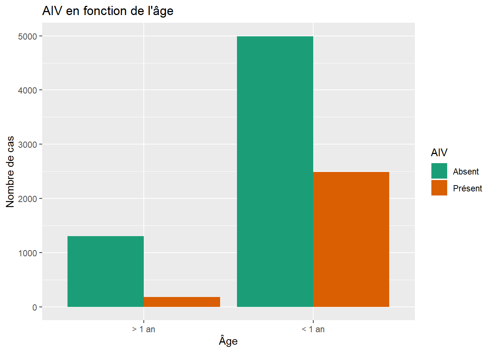
Différents thèmes disponibles dans ggplot2. Le thème theme_cowplot du package cowplot est généralement bon pour les figures à publier (minimaliste, police de caractères assez grande). La fonction theme_set permet de modifier le thème par défaut pour tous les graphiques produits dans une session R.
library(cowplot)
theme_set(theme_cowplot(font_size = 14))
p1
Le package cowplot permet aussi de combiner différentes figures, ex.: Figure 1(a), 1(b), etc. Notez que nous avons éliminé la légende de la figure de gauche avec theme(legend.position = "none"). La fonction theme contient différentes options de personnalisation (ex.: position de la légende, taille du texte, couleur d’arrière plan, etc.); consultez les documents de référence de ggplot2 pour plus de détails.
p2 <- ggplot(aiv, aes(x = Temperature, fill = as.factor(AIV))) +
labs(x = "Température", y = "Nombre de cas") +
geom_histogram(color = "white") +
scale_fill_brewer(palette = "Dark2") +
theme(legend.position = "none")
plot_grid(p2, p1, labels = c("A", "B"))## `stat_bin()` using `bins = 30`. Pick better value with `binwidth`.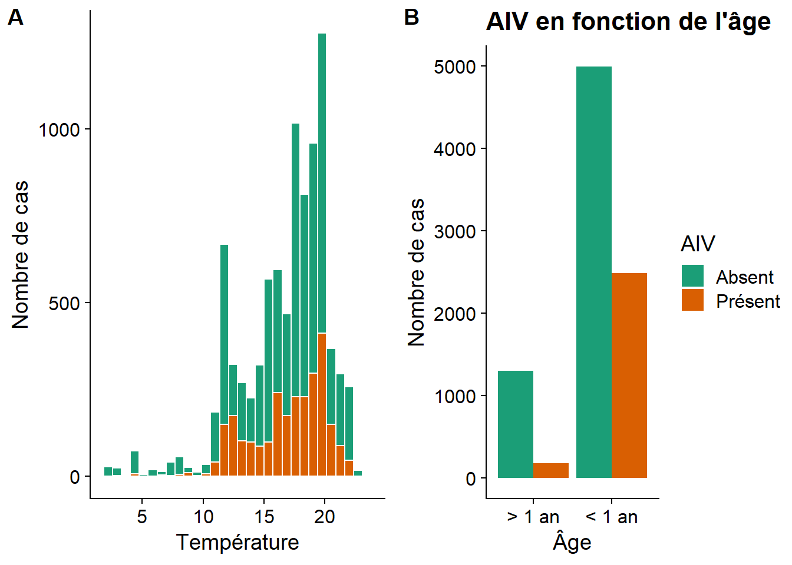
Exemple 2
Jeu de données Animals2 du package robustbase: masse corporelle (en kg) et masse du cerveau (en g) pour 62 espèces de mammifères et 3 dinosaures (valeurs aberrantes). Dans le code ci-dessous, nous utilisons la fonction add_rownames du package dplyr pour créer une colonne rowname à partir des noms de rangées (noms des animaux).
library(robustbase)
library(dplyr)
data(Animals2)
Animals2 <- add_rownames(Animals2)
head(Animals2)## # A tibble: 6 x 3
## rowname body brain
## <chr> <dbl> <dbl>
## 1 Mountain beaver 1.35 8.1
## 2 Cow 465 423
## 3 Grey wolf 36.3 120.
## 4 Goat 27.7 115
## 5 Guinea pig 1.04 5.5
## 6 Dipliodocus 11700 50Nous créons des jeux de données séparés pour les dinosaures (rangées 6, 16 et 26) et les autres. Nous illustrons les données avec un nuage de points, auquel est superposé une droite de régression linéaire avec geom_smooth et des points mettant en évidence les 3 valeurs aberrantes.
dino <- Animals2[c(6, 16, 26),]
non_dino <- Animals2[-c(6,16,26),]
p_animals <- ggplot(Animals2, aes(x = body, y = brain)) +
geom_point() +
geom_smooth(data = non_dino, method = "lm", linetype = "dashed") +
geom_point(data = dino, size = 2, color = "red") +
scale_x_log10() +
scale_y_log10()
p_animals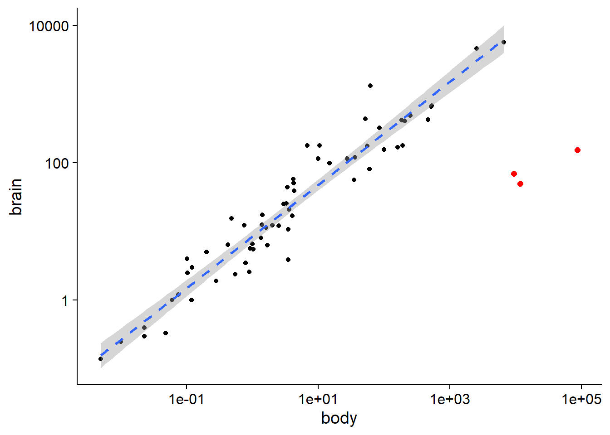
Dans cet exemple, notez l’utilisation de l’argument data pour associer différents jeux de données à des geom spécifiques (ex.: non-dinosaures pour geom_smooth, dinosaures pour le 2e geom_point). Nous personnalisons aussi l’apparence de la droite (“dashed” = ligne en tirets) et les points (couleur et grosseur). Rappel: Des attributs comme linetype, size et color peuvent être associés à une variable dans aes pour varier l’apparence selon les niveaux de la variable, mais hors de la fonction aes ils appliquent une valeur unique à tous les points/lignes du geom.
Finalement, nous avons appliqué une échelle logarithmique aux deux axes (scale_x_log10() et scale_y_log10()). Le résultat est semblable à celui qui serait obtenu avec une transformation des variables (ex.: aes(x = log(body), y = log(brain))), excepté qu’ici les nombres affichés sur les axes sont les valeurs non-transformées, qui sont souvent plus faciles à interpréter.
Puisque nous avons enregistré le graphique précédent dans une variable p_animals, nous pouvons y ajouter des éléments sans répéter tout le code. Ici, nous ajoutons le nom des trois dinosaures avec geom_text. L’attribut label dans aes indique quelle variable fournit le texte à afficher.
p_animals +
geom_text(data = dino, aes(label = rowname))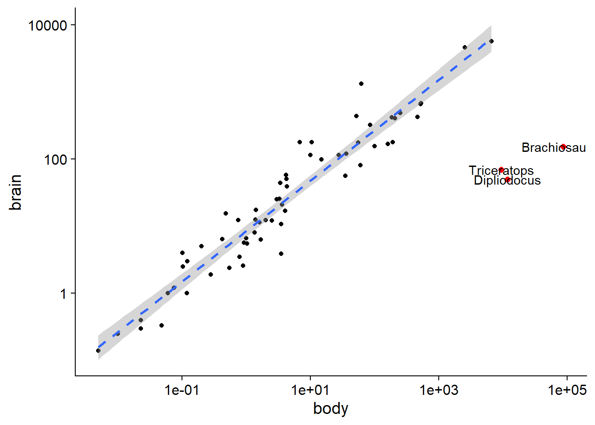
Le package ggrepel est très utile pour ajouter des étiquettes aux observations d’un graphique. En remplaçant geom_text par geom_text_repel, le texte est automatiquement déplacé pour cacher le moins possible les autres éléments du graphique. Dans l’exemple ci-dessous, nous ajoutons des étiquettes pour toutes les espèces avec une masse inférieure à 0.01 kg ou supérieure à 1000 kg.
library(ggrepel)
p_animals +
geom_text_repel(data = filter(Animals2, body < 0.01 | body > 1000),
aes(label = rowname))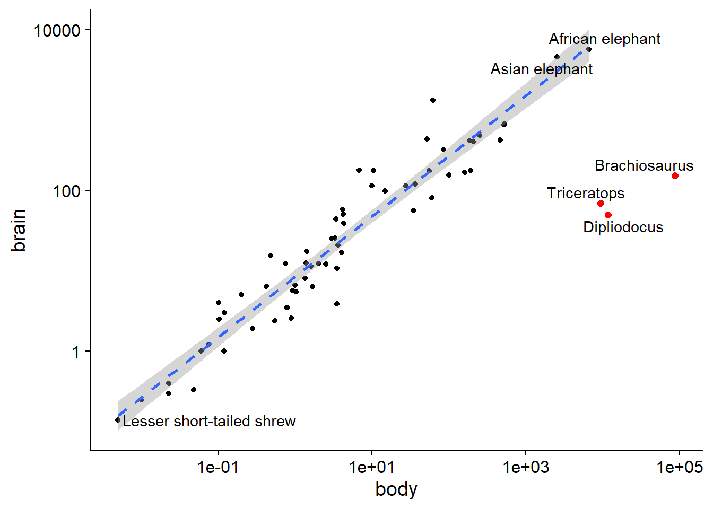
Exemple 3
Dans cet exemple, nous voulons comparer la représentation de 5 catégories (colonne cat) parmi des valeurs observées (proportions dans la colonne obs) à des proportions de références (colonne ref).
prop <- data.frame(
cat = LETTERS[1:5],
ref = c(0.2, 0.35, 0.15, 0.12, 0.18),
obs = c(0.26, 0.16, 0.42, 0.09, 0.07)
)
prop## cat ref obs
## 1 A 0.20 0.26
## 2 B 0.35 0.16
## 3 C 0.15 0.42
## 4 D 0.12 0.09
## 5 E 0.18 0.07Dans le graphique ci-dessous, les observations sont représentées par des points reliés par des lignes, tandis que les proportions de référence sont indiquées par des barres.
geom_col(pour colonne) produit un diagramme à barres où la variable \(y\) est donnée par une colonne du jeu de données, contrairement àgeom_baroù l’axe des \(y\) compte le nombre de fois où la valeur montrée en \(x\) apparaît (voir l’exemple 1).shape = 18donne une forme de losange aux points. (Voir la référence en haut du document pour la définition de ces codes.)L’attribut
groupdansaesspécifie quelle variable définit les groupes de points à relier par des lignes (si un attribut commecolorest spécifié, celui-là définit aussi les groupes). Icigroup = 1signifie que tous les points sont dans le même groupe.
ggplot(prop, aes(x = cat, y = obs, group = 1)) +
geom_col(aes(y = ref), fill = "grey70") +
geom_point(color = "darkred", shape = 18, size = 3) +
geom_line(linetype = "dashed", color = "darkred")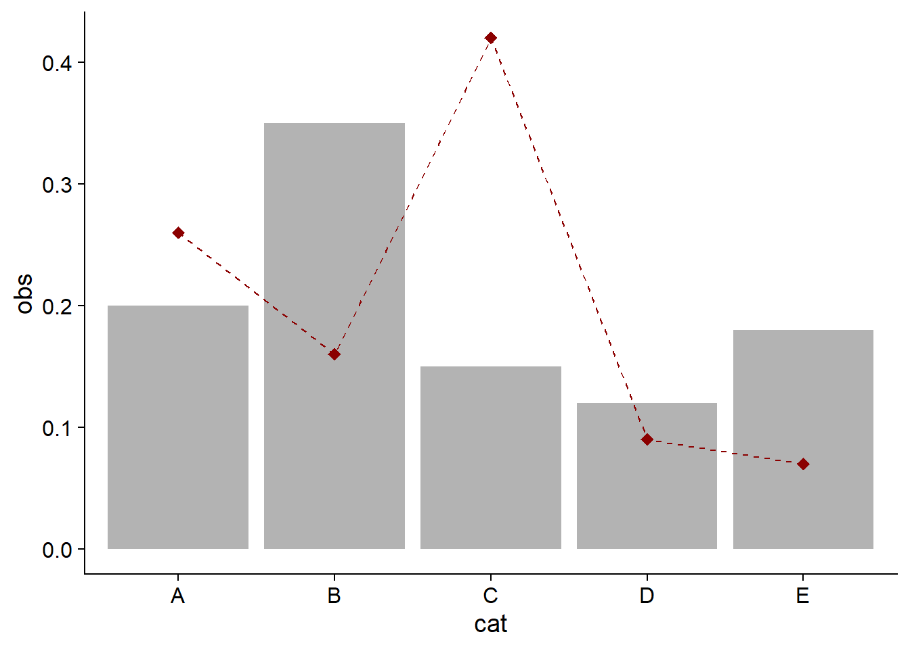
Pour ordonner les catégories en \(x\) en ordre décroissant de la variable obs, nous pouvons spécifier x = reorder(cat, -obs), où le signe “-” indique l’ordre décroissant.
ggplot(prop, aes(x = reorder(cat, -obs), y = obs, group = 1)) +
geom_col(aes(y = ref), fill = "grey70") +
geom_point(color = "darkred", shape = 18, size = 3) +
geom_line(linetype = "dashed", color = "darkred")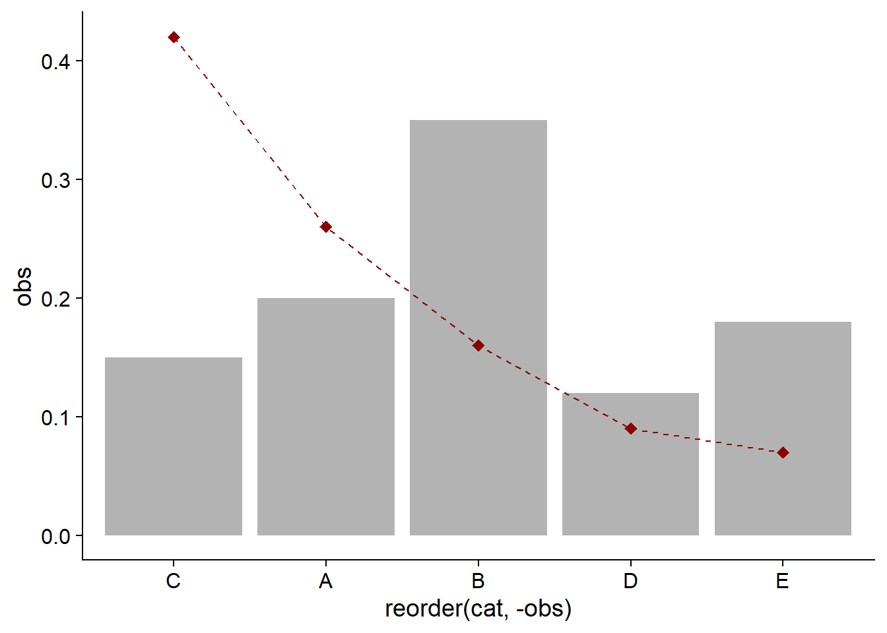
La version suivante ajoute les valeurs de la colonne obs au-dessus de chaque point; nudge_y = 0.05 indique que le texte doit être déplacé de 0.05 unités vers le haut sur l’axe des y. Pour représenter les valeurs en pourcentages, nous transformons obs avec la fonction percent du packge scales. Ce package contient plusieurs fonctions pour formatter les valeurs numériques.
library(scales)
ggplot(prop, aes(x = reorder(cat, -obs), y = obs, group = 1)) +
geom_col(aes(y = ref), fill = "grey70") +
geom_point(color = "darkred", shape = 18, size = 3) +
geom_line(linetype = "dashed", color = "darkred") +
geom_text(aes(label = percent(obs)), color = "darkred", nudge_y = 0.05)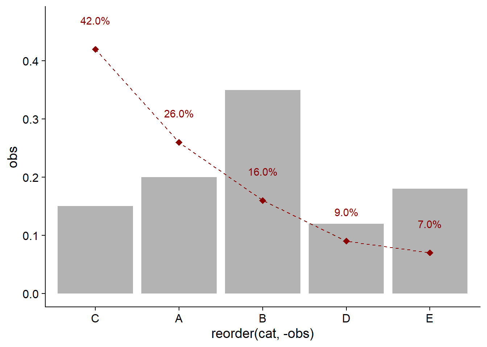
Nous pouvons aussi transformer l’axe des \(y\) en pourcentages, en donnant la fonction percent_format à l’argument labels (plutôt que percent pour transformer des valeurs individuelles). L’argument accuracy = 1 dans percent et percent_format indique que les valeurs sont affichées à l’unité près (accuracy = 0.1 serait au dixième près, etc.)
library(scales)
ggplot(prop, aes(x = reorder(cat, -obs), y = obs, group = 1)) +
geom_col(aes(y = ref), fill = "grey70") +
geom_point(color = "darkred", shape = 18, size = 3) +
geom_line(linetype = "dashed", color = "darkred") +
geom_text(aes(label = percent(obs, accuracy = 1)), color = "darkred", nudge_y = 0.05) +
scale_y_continuous(labels = percent_format(accuracy = 1))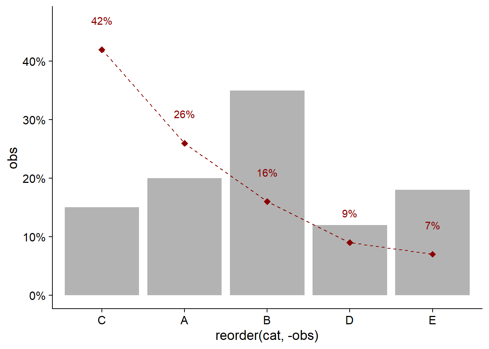